Ming-Yu Liu
I am a PhD candidate at the State Key Laboratory of CAD&CG, Zhejiang University, advised by Hao Chen and Chunhua Shen. I got my bachelor degree from the School of Artificial Intelligence and Automation(Elite Class), Huazhong University of Science and Technology. I'm open for discussion on any exciting topics about Robots and Foundation Model. Feel free to contact me!
I am now a research scientist intern at ByteDance Seed, working on next generation robotic foundation model. Previously, I worked as a research intern at Shanghai AI Laboratory, working closely with Tong He. I was a research intern at
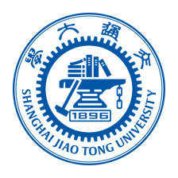
MVIG, SJTU, advised by Yonglu Li and Cewu Lu. Before, I was delighted to work at VLR Group, HUST, advised by Yuliang Liu and Xiang Bai. I have also worked at HAIV Lab, HUST, with Xiang Xiang. I visited Nanyang Technological University in 2024. During my academic journey, I feel so proud to have worked closely with so many brilliant collaborators, both in the past and present: Haoyi Zhu, Wen Wang, Canyu Zhao, Bo Zhang, Weijia Wu, Chenchen Jing, Yue Xu, Wenwen Yu.Formal Bio Github G. Scholar LinkedIn
mingyuliu [at] zju [dot] edu [dot] cn
33 publications · * Equal contribution · Google Scholar
Embodied AI
Robot learning, manipulation, VLA policies, and affordance grounding.
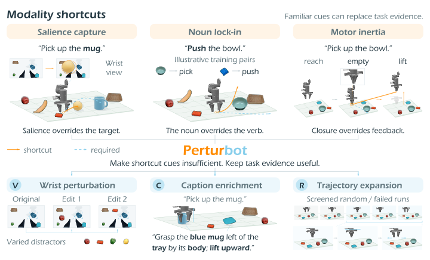
PerturBot: Breaking Shortcut Priors in Vision-Language-Action Models with Perturbative Training
Mingyu Liu*, Chonghao Sima*, Tianjian Feng, Hanqing Wang, Cong Chen, Hao Chen, Chunhua Shen
Manuscript, 2026
Webpage • Code • PDF
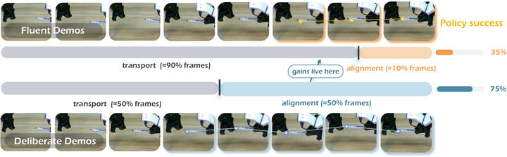
Perfect Demo Makes Poor Teacher: Learning Robust Alignment from Critical Motion Segments
Mingyu Liu*, Zeju Li*, Jiuhe Shu, Hanqing Wang, Yuhao Chao, Hao Chen, Chunhua Shen
Conference on Robot Learning (CoRL) 2026
Webpage • Code • PDF
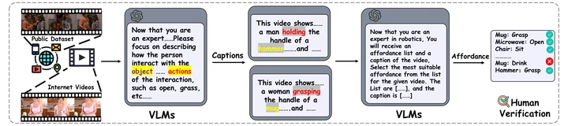
VideoAfford: Grounding 3D Affordance from Human-Object-Interaction Videos via Multimodal Large Language Model
Hanqing Wang*, Mingyu Liu*, Xiaoyu Chen, Chengwei MA, Yiming Zhong, Wenti Yin, Yuhao Liu, Zhiqing Cui, Jiahao Yuan, Lu Dai, Zhiyuan Ma, Hui Xiong
Conference on Neural Information Processing Systems (NeurIPS) 2026
Webpage • Code • PDF
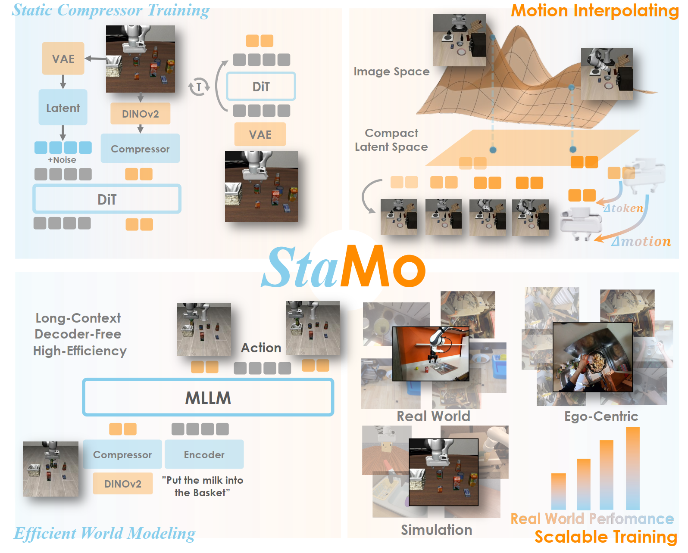
StaMo: Unsupervised Learning of Generalizable Robot Motion from Compact State Representation
Mingyu Liu*, Jiuhe Shu, Hui Chen, Zeju Li, Canyu Zhao, Jiange yang, Shenyuan Gao, Hao Chen, Chunhua Shen
Conference on Computer Vision and Pattern Recognition (CVPR) 2026
★ Highlight Presentation(3.1% in all submission) ★
Webpage • Code • PDF
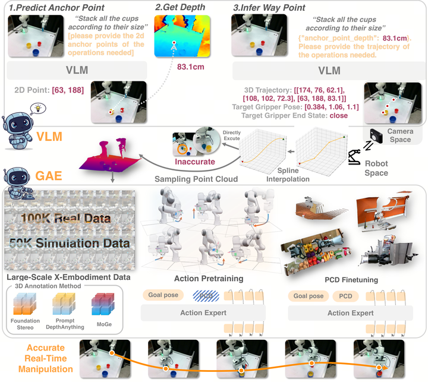
GAE: Unleashing Physical Potential of VLM with Generalizable Action Expert
Mingyu Liu, Zheng Huang, Xiaoyi Lin, Muzhi Zhu, Canyu Zhao, Yating Wang, Haoyi Zhu, Hao Chen, Chunhua Shen
International Conference on Machine Learning (ICML) 2026
Webpage • Code • PDF
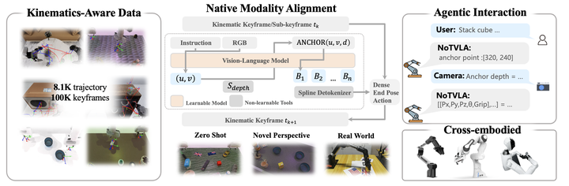
NoTVLA: Semantics-Preserving Robot Adaptation via Narrative Action Interfaces
Zheng Huang*, Mingyu Liu*, Xiaoyi Lin, Muzhi Zhu, Canyu Zhao, Zongze Du, Ye Lin, Xiaoman Li, Yiduo Jia, Hao Zhong, Hao Chen, Chunhua Shen
Conference on Neural Information Processing Systems (NeurIPS) 2026
Webpage • Code • PDF
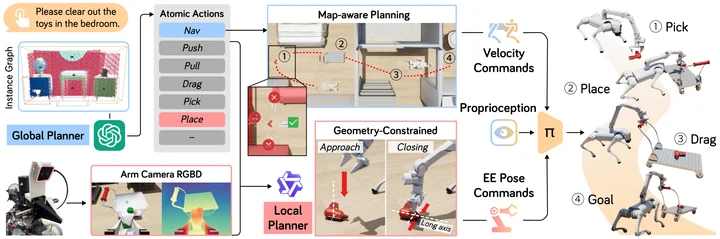
ODYSSEY: Open-World Quadrupeds Exploration and Manipulation for Long-Horizon Tasks
Kaijun Wang, Liqin Lu, Mingyu Liu, Jianuo Jiang, Zeju Li, Bolin Zhang, Wancai Zheng, Xinyi Yu, Hao Chen, Chunhua Shen
AAAI Conference on Artificial Intelligence (AAAI) 2026
★ Oral Presentation ★
Webpage • Code • PDF
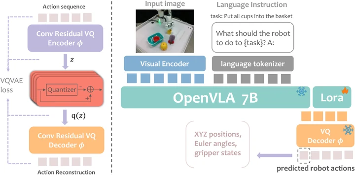
VQ-VLA: Improving Vision-Language-Action Models via Scaling Vector-Quantized Action Tokenizers
Yating Wang, Haoyi Zhu, Mingyu Liu, Jiange Yang, Hao-Shu Fang, Tong He
International Conference on Computer Vision (ICCV) 2025
Webpage • Code • PDF
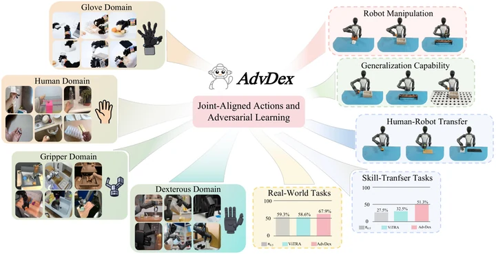
AdvDex: Learning Dexterous Manipulation from Human Demonstrations via Joint-Aligned Actions and Adversarial Learning
Zhiyue Zhao, Jingyi Wu, Hairuo Liu, Mingyu Liu, Liyang Li, Hengdi Zhang, Tong He, Zhengxue Cheng
Conference on Robot Learning (CoRL) 2026
Webpage • Code • PDF
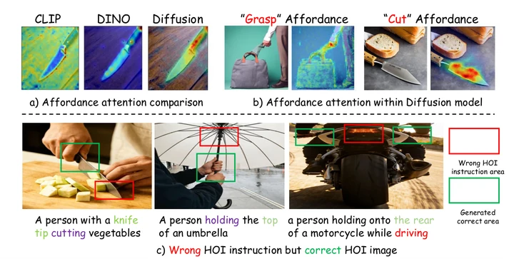
Diffusion Models are Open-World Affordance Learners: Leveraging Generative Priors for 3D Affordance Learning
Hanqing Wang, Zhenhao Zhang, Kaiyang Ji, Mingyu Liu, …, Zhiyuan Ma, Hui Xiong
European Conference on Computer Vision (ECCV) 2026
Webpage • Code • PDF
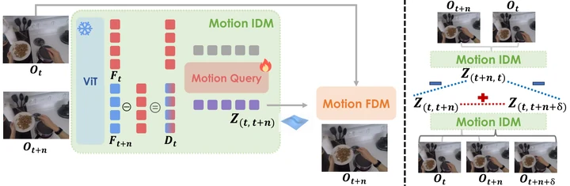
CoMo: Learning Continuous Latent Motion from Internet Videos for Scalable Robot Learning
Jiange Yang, Yansong Shi, Haoyi Zhu, Mingyu Liu, Kaijing Ma, Yating Wang, Gangshan Wu, Tong He, Limin Wang
Conference on Computer Vision and Pattern Recognition (CVPR) 2026
Webpage • Code • PDF
Foundation Model
Vision-language reasoning and multimodal evaluation, including earlier work on recognition and document understanding.
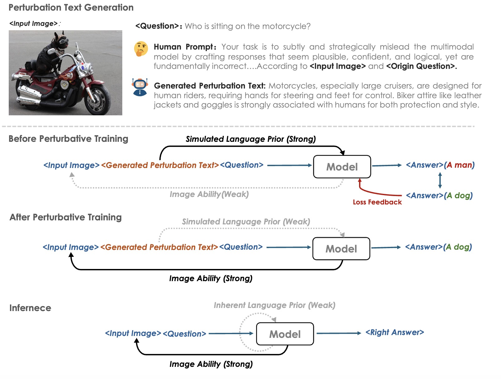
PerturboLLaVA: Reducing Multimodal Hallucinations with Perturbative Visual Training
Cong Chen*, Mingyu Liu*, Chenchen Jing, Yizhou Zhou, Fengyun Rao, Hao Chen, Bo Zhang, Chunhua Shen
International Conference on Learning Representations (ICLR) 2025
★ Spotlight Presentation(5.1% in all submission) ★
Webpage • Code • PDF
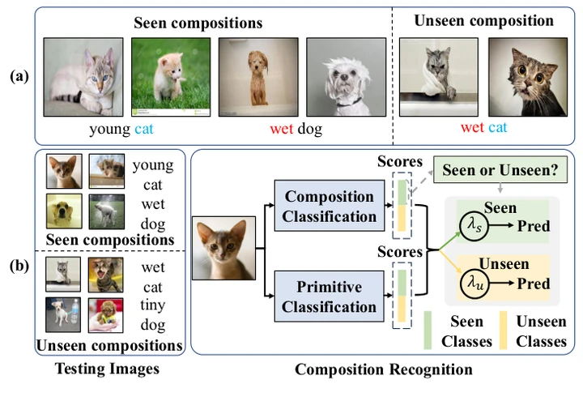
Seeing the Unseen: Composing Outliers for Compositional Zero-Shot Learning
Chenchen Jing, Mingyu Liu, Hao Chen, Yuling Xi, Xingyuan Bu, Dong Gong, Chunhua Shen
International Joint Conference on Artificial Intelligence (IJCAI) 2025
Webpage • Code • PDF
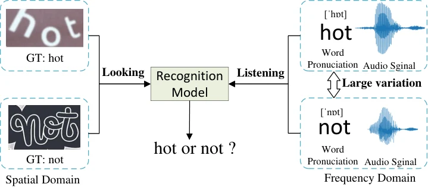
Looking and Listening: Audio Guided Text Recognition
Wenwen Yu, Mingyu Liu, Biao Yang, Enming Zhang, Deqiang Jiang, Xing Sun, Yuliang Liu, Xiang Bai
Preprint, 2023
Webpage • Code • PDF
ICDAR 2023 Competition on Reading the Seal Title
Wenwen Yu, Mingyu Liu, Mingrui Chen, Ning Lu, Yinlong Wen, Yuliang Liu, Dimosthenis Karatzas, Xiang Bai
International Conference on Document Analysis and Recognition (ICDAR) 2023
Webpage • Code • PDF
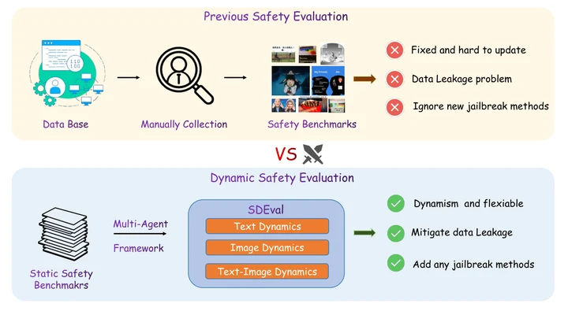
SDEval: Safety Dynamic Evaluation for Multimodal Large Language Models
Hanqing Wang, Yuan Tian, Mingyu Liu, Zhenhao Zhang, Xiangyang Zhu
AAAI Conference on Artificial Intelligence (AAAI) 2026
Webpage • Code • PDF
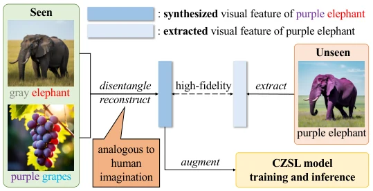
Learning by Imagining: Debiased Feature Augmentation for Compositional Zero-Shot Learning
Haozhe Zhang, Chenchen Jing, Mingyu Liu, Qingsheng Wang, Hao Chen
Preprint, 2025
Webpage • Code • PDF
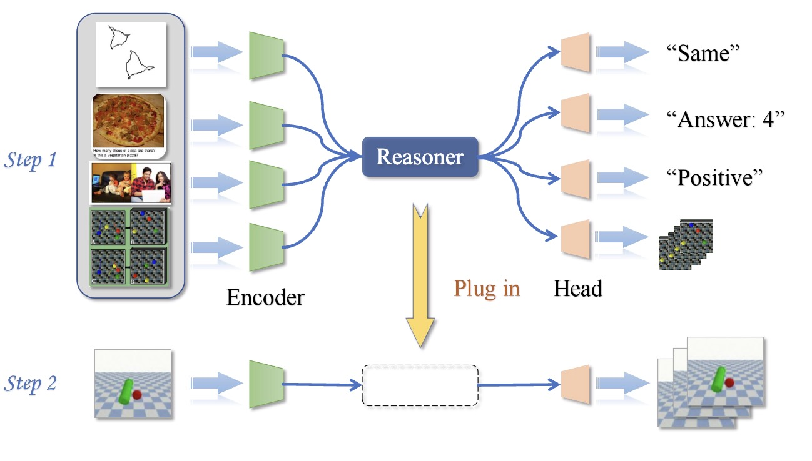
Take A Step Back: Rethinking the Two Stages in Visual Reasoning
Mingyu Zhang, Jiting Cai, Mingyu Liu, Yue Xu, Cewu Lu, Yong-Lu Li
European Conference on Computer Vision (ECCV) 2024
Webpage • Code • PDF
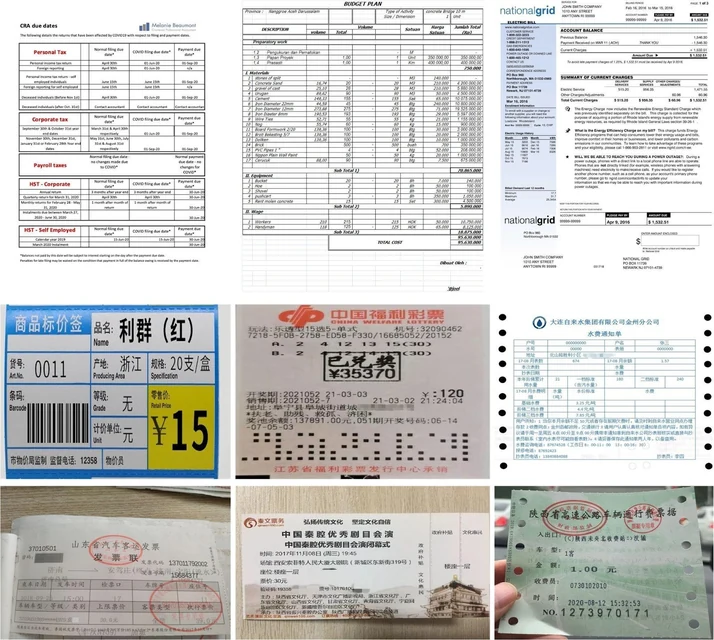
ICDAR 2023 Competition on Structured Text Extraction from Visually-Rich Document Images
Wenwen Yu, Chengquan Zhang, Haoyu Cao, Wei Hua, …, Mingyu Liu, …, Jingdong Wang, Xiang Bai
International Conference on Document Analysis and Recognition (ICDAR) 2023
Webpage • Code • PDF
Generative Models & World Models
Image and video generation, diffusion-based perception, and embodied world modeling.
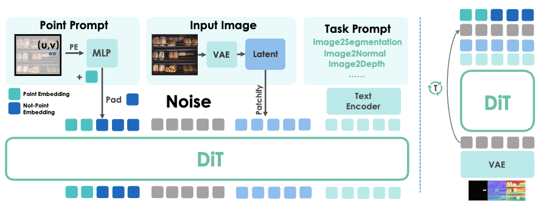
DICEPTION: A Generalist Diffusion Model for Visual Perceptual Tasks
Canyu Zhao*, Mingyu Liu*, Huanyi Zheng, Muzhi Zhu, Zhiyue Zhao, Hao Chen, Tong He, Chunhua Shen
Conference on Neural Information Processing Systems (NeurIPS) 2025
★ Spotlight Presentation(3.1% in all submission) ★
Webpage • Code • PDF
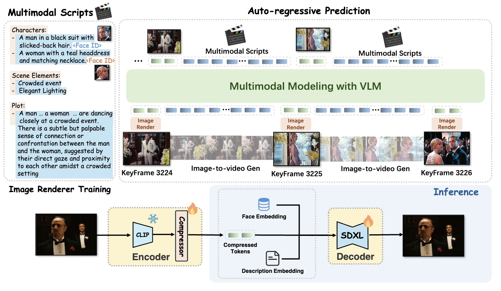
MovieDreamer: Hierarchical Generation for Coherent Long Visual Sequence
Canyu Zhao*, Mingyu Liu*, Wen Wang, Weihua Chen, Fan Wang, Hao Chen, Bo Zhang, Chunhua Shen
International Conference on Learning Representations (ICLR) 2025
Webpage • Code • PDF
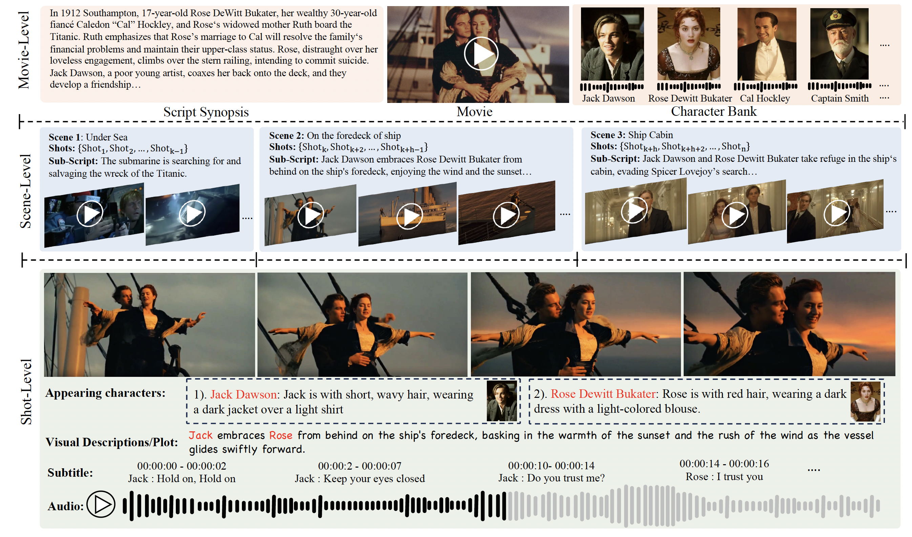
MovieBench: A Hierarchical Movie Level Dataset for Long Video Generation
Weijia Wu, Mingyu Liu, Zeyu Zhu, Xi Xia, Haoen Feng, Wen Wang, Kevin Qinghong Lin, Chunhua Shen, Mike Zheng Shou
Conference on Computer Vision and Pattern Recognition (CVPR) 2025
Webpage • Code • PDF
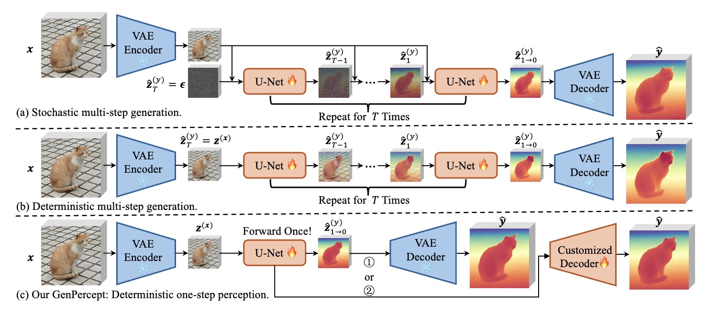
What Matters When Repurposing Diffusion Models for General Dense Perception Tasks?
Guangkai Xu, Yongtao Ge, Mingyu Liu, Chengxiang Fan, Kangyang Xie, Zhiyue Zhao, Hao Chen, Chunhua Shen
International Conference on Learning Representations (ICLR) 2025
Webpage • Code • PDF
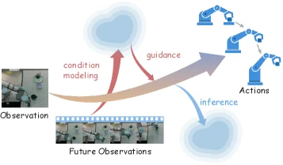
World Guidance: World Modeling in Condition Space for Action Generation
Yue Su, Sijin Chen, Haixin Shi, Mingyu Liu, Zhengshen Zhang, Ningyuan Huang, Weiheng Zhong, Zhengbang Zhu, Yuxiao Liu, Xihui Liu
International Conference on Machine Learning (ICML) 2026
Webpage • Code • PDF
Generative Video Matting
Yongtao Ge, Kangyang Xie, Guangkai Xu, Mingyu Liu, Li Ke, Longtao Huang, Hui Xue, Hao Chen, Chunhua Shen
ACM SIGGRAPH (SIGGRAPH) 2025
Webpage • Code • PDF
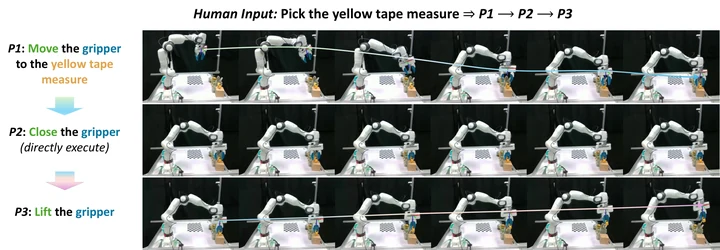
Learning Primitive Embodied World Models: Towards Scalable Robotic Learning
Qiao Sun, Liujia Yang, Wei Tang, Wei Huang, …, Mingyu Liu, …, Nanyang Ye, Qinying Gu
Preprint, 2025
Webpage • Code • PDF
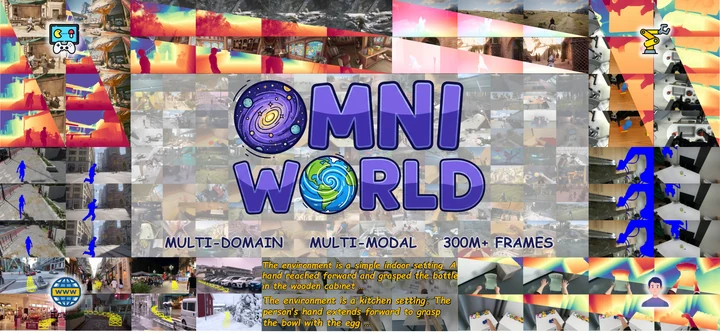
OmniWorld: A Multi-Domain and Multi-Modal Dataset for 4D World Modeling
Yang Zhou, Yifan Wang, Jianjun Zhou, Wenzheng Chang, …, Mingyu Liu, …, Kaipeng Zhang, Tong He
International Conference on Learning Representations (ICLR) 2026
Webpage • Code • PDF
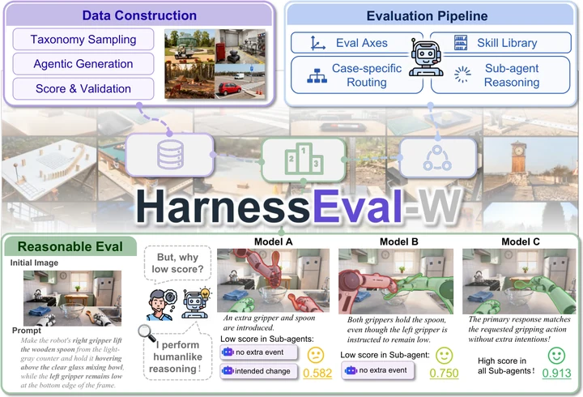
HarnessEval-W: Agentifying the Evaluation of Visual Worlds
Weiliang Chen, Haowen Sun, Jun Gao, Jiawei Chi, …, Mingyu Liu, …, Jiangran Lyu, Fangfu Liu
Technical Report, 2026
Webpage • Code • PDF
Reinforcement Learning
Reinforcement-learning post-training for perception, multimodal reasoning, and VLA policies.
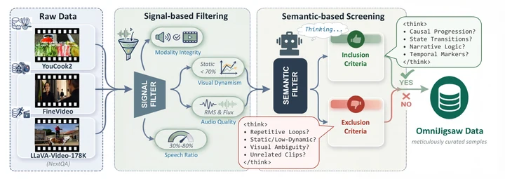
OmniJigsaw: Enhancing Omni-Modal Reasoning via Modality-Orchestrated Reordering
Yiduo Jia, Muzhi Zhu, Hao Zhong, Mingyu Liu, Yuling Xi, Hao Chen, Bin Qin, Yongjie Yang, Zhenbo Luo, Chunhua Shen
Conference on Neural Information Processing Systems (NeurIPS) 2026
Webpage • Code • PDF
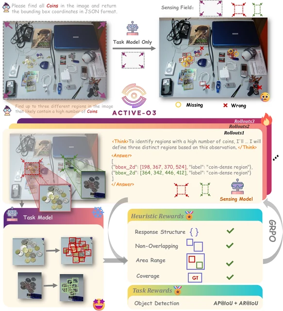
ACTIVE-o3: Empowering MLLMs with Active Perception via Pure Reinforcement Learning
Muzhi Zhu, Hao Zhong, Canyu Zhao, Zongze Du, Mingyu Liu, Zheng Huang, Anzhou Li, Hao Chen, Cheng Zou, Jingdong Chen, Ming Yang, Chunhua Shen
International Conference on Machine Learning (ICML) 2026
Webpage • Code • PDF
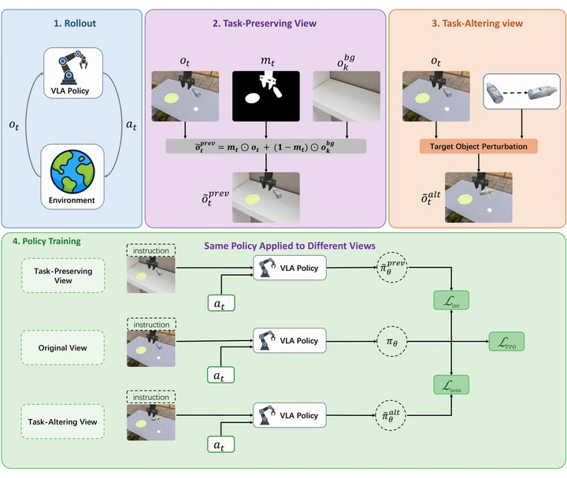
What to Ignore, What to React: Visually Robust RL Fine-Tuning of VLA Models
Yuanfang Peng, Jingjing Fu, Chuheng Zhang, Li Zhao, Jiang Bian, Mingyu Liu, Ling Zhang, Jun Zhang, Rui Wang
Preprint, 2026
Webpage • Code • PDF
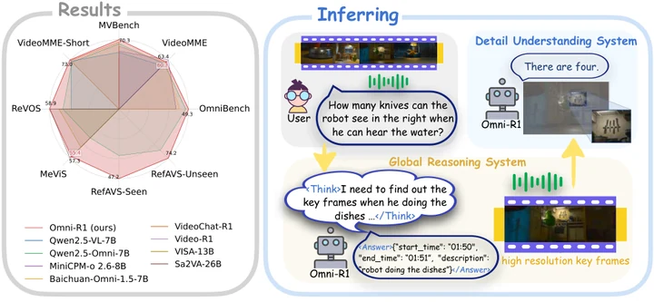
Omni-R1: Reinforcement Learning for Omnimodal Reasoning via Two-System Collaboration
Hao Zhong, Muzhi Zhu, Zongze Du, Zheng Huang, Canyu Zhao, Mingyu Liu, Wen Wang, Hao Chen, Chunhua Shen
Conference on Neural Information Processing Systems (NeurIPS) 2025
Webpage • Code • PDF
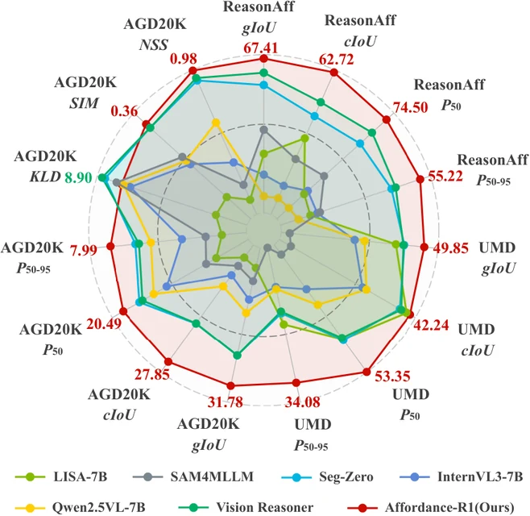
Affordance-R1: Reinforcement Learning for Generalizable Affordance Reasoning in Multimodal Large Language Model
Hanqing Wang, Shaoyang Wang, Yiming Zhong, Zemin Yang, Jiamin Wang, Zhiqing Cui, Jiahao Yuan, Yifan Han, Mingyu Liu, Yuexin Ma
AAAI Conference on Artificial Intelligence (AAAI) 2026
★ Oral Presentation ★
Webpage • Code • PDF
Internship
Education
-
Zhejiang University
– PresentPhD Candidate · State Key Laboratory of CAD&CG
Advisors: Hao Chen and Chunhua Shen
-
Bachelor's Degree · Artificial Intelligence and Automation (Elite Class)
Advisors: Yuliang Liu and Xiang Bai
Honors
2026
Silver Reviewer Award, ICML2024
Excellent Undergradute Graduation thesis2023
Academic Excellence Scholarship (rk1/30 Honor Class)，HUST2022
Outstanding Undergraduate of Academic Performance (Top 1% in HUST)Academic Service
Conference Reviewer
- International Conference on Learning Representations (ICLR)
- International Conference on Machine Learning (ICML)
- Conference on Neural Information Processing Systems (NeurIPS)
- IEEE/CVF Conference on Computer Vision and Pattern Recognition (CVPR)
- European Conference on Computer Vision (ECCV)
- ACM International Conference on Multimedia (ACM MM)